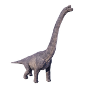

Useful Website
Brachiosaurus is a genus of herbivorous sauropod and one of the largest dinosaurs to have lived, weighing in at over 50 tonnes. Thanks to its long neck, Brachiosaurus can feed on leaves from trees up to 12 metres high, eating up to 400kg of vegetation every day, while its vast size means any potential predators tend to steer clear.
